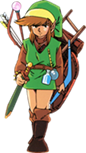
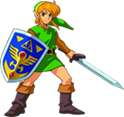
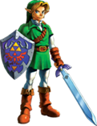
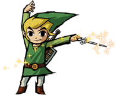
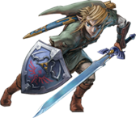
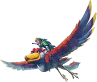
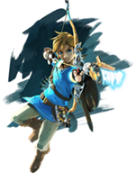
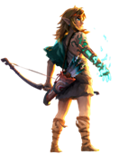

A lo largo de los años, la saga The Legend of Zelda se ha consolidado como una de las más importantes e influyentes de la historia de los videojuegos. Con cada entrega, la franquicia ha sabido reinventarse, ofreciendo nuevas formas de explorar, combatir y contar historias sin perder su esencia. A continuación vamos a abordar los juegos más importantes de la saga, analizando por qué han marcado un antes y un después para la saga.
Los juegos más importantes de The legend of Zelda
Página Principal >
The Legend of Zelda: Historia de la franquicia >
Los juegos más importantes de The legend of Zelda

Lanzado en 1986 para la Nintendo Entertainment System, The Legend of Zelda supuso una revolución en el contexto de los videojuegos de su época. En un momento en el que la mayoría de los títulos apostaban por experiencias lineales y partidas cortas, el juego introdujo un mundo abierto para explorar libremente, la sensación de aventura continua y un sistema de progreso basado en la exploración y el descubrimiento. Estas innovaciones marcaron un nuevo estándar dentro del medio y sentaron las bases de un género. Su influencia se extendió mucho más allá de su lanzamiento, ya que sus ideas fundamentales han perdurado a lo largo de décadas, convirtiéndose en pilares de la saga y dejando un legado duradero que ha inspirado a innumerables videojuegos posteriores.
Publicado en 1991 para la Super Nintendo Entertainment System, The Legend of Zelda: A Link to the Past representó un punto de madurez para la saga en el contexto de su época. El juego perfeccionó muchas de las ideas introducidas en entregas anteriores, como la exploración, los puzles y el combate, y las combinó con una narrativa más elaborada y un mundo más rico y coherente. En una etapa en la que los videojuegos comenzaban a explotar las capacidades técnicas de las consolas de 16 bits, esta entrega destacó por su diseño de niveles, su ambientación y su apartado audiovisual. Su legado ha sido especialmente significativo, ya que estableció la estructura clásica de la saga Zelda, sirviendo como referencia para numerosos títulos posteriores y consolidando una fórmula que influiría tanto en futuras entregas de la franquicia como en el género de la aventura y la acción.
Lanzado en 1998 para Nintendo 64, The Legend of Zelda: Ocarina of Time marcó un antes y un después en la historia de los videojuegos al trasladar con éxito la saga al entorno tridimensional. En una época en la que el 3D aún estaba en proceso de consolidación, el juego destacó por innovaciones como el sistema de fijado de objetivos, que redefinió el combate y la exploración en tres dimensiones. Además, su narrativa, su estructura de mazmorras y su uso del tiempo como mecánica jugable elevaron el nivel de profundidad y coherencia del medio. Su legado ha sido inmenso, ya que estableció muchos de los estándares que aún hoy se utilizan en los juegos de acción y aventura, influyendo no solo en las entregas posteriores de Zelda, sino en toda la industria del videojuego.
Lanzado en 2002 para Nintendo GameCube, The Legend of Zelda: The Wind Waker destacó en su época por tomar una dirección artística arriesgada que rompía con el realismo que predominaba en muchos videojuegos del momento. Su estilo visual cel-shaded no solo permitió una expresión más emotiva de los personajes, sino que también demostró que la identidad artística podía ser tan importante como el realismo técnico. Además, el juego amplió el concepto de exploración al situar la aventura en un vasto océano, reforzando la sensación de viaje y descubrimiento. Con el paso del tiempo, su legado ha crecido de forma notable, siendo reconocido como uno de los títulos más influyentes de la saga por su estética atemporal y su enfoque narrativo. Estas decisiones marcaron el camino para futuras entregas y consolidaron la idea de que Zelda podía reinventarse sin perder su esencia.
Publicado en 2006 para Nintendo GameCube y Wii, The Legend of Zelda: Twilight Princess reflejó el contexto de su época al apostar por un tono más oscuro y realista, en respuesta a la demanda de una experiencia más madura dentro de la saga. El juego destacó por ampliar la narrativa y profundizar en la ambientación, así como por introducir mecánicas novedosas como la transformación de Link en lobo, que aportó variedad a la jugabilidad. En una etapa de transición tecnológica marcada por el lanzamiento de Wii, también supuso una evolución en el control y la forma de interactuar con el mundo del juego. Su legado se manifiesta en la consolidación de una visión más épica y cinematográfica de Zelda, influyendo en entregas posteriores y demostrando la capacidad de la saga para adaptarse a las expectativas del público sin renunciar a sus elementos clásicos.
Lanzado en 2011 para Wii, The Legend of Zelda: Skyward Sword fue una entrega especialmente relevante en su época por su apuesta por un sistema de control basado en el movimiento, que buscaba una mayor precisión e inmersión en la experiencia de juego. En un momento en el que la innovación en la interacción con el jugador era un aspecto clave de la industria, el título destacó por integrar los movimientos de la espada de forma directa en la jugabilidad. Además, profundizó como nunca antes en los orígenes de la saga, dando mayor peso a la narrativa y al trasfondo del mundo de Zelda. Su legado se aprecia tanto en la importancia que otorgó a la historia dentro de la franquicia como en su influencia en el diseño de mecánicas experimentales, sentando las bases para futuras reinterpretaciones de la saga.
Lanzado en 2017 para Wii U y Nintendo Switch, The Legend of Zelda: Breath of the Wild supuso una reinvención profunda de la saga en el contexto de una industria cada vez más orientada a los mundos abiertos y la libertad del jugador. El juego rompió con muchas de las convenciones clásicas de Zelda, apostando por una exploración totalmente abierta desde el inicio y por sistemas de juego basados en la experimentación y la física. Esta filosofía conectó con las tendencias de su época, pero al mismo tiempo las llevó un paso más allá. Su legado ha sido enorme, ya que redefinió los estándares del diseño de mundos abiertos y ejerció una influencia notable tanto en entregas posteriores de la saga como en numerosos videojuegos contemporáneos, consolidándose como uno de los títulos más importantes de la historia del medio.
Publicado en 2023 para Nintendo Switch, The Legend of Zelda: Tears of the Kingdom reafirmó y amplió la revolución iniciada por Breath of the Wild, respondiendo a las expectativas de una época en la que los jugadores demandaban aún mayor libertad y creatividad. El juego llevó el concepto de mundo abierto un paso más allá al introducir nuevas capas de exploración y sistemas que fomentan la construcción y la experimentación, convirtiendo al jugador en parte activa del diseño de las soluciones. Su legado se define por haber demostrado que la innovación no siempre requiere empezar desde cero, sino profundizar y expandir ideas existentes, influyendo tanto en el futuro de la saga como en la forma en que se concibe la interacción y la creatividad dentro de los videojuegos modernos.
De todos estos juegos mencionados anteriormente, hay que destacar la importancia de uno de ellos y esa es la de Zelda Ocarina of Time del cual haré una página dedicada enteramente al videojuego, en la que hablaré mas a fondo de su importancia, historia, lo que supuso para la industria de los videojuegos del momento y mucho mas.